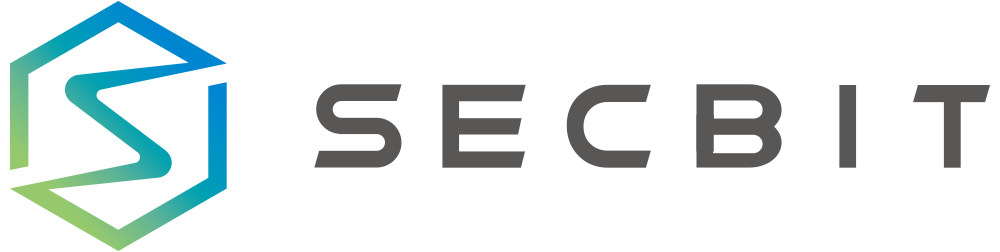

We are SECBIT Labs. We aim to build high-confidence and trustworthy protocol, application, and facilities on the blockchain. We focus on the research of formal verification, practices of zero-knowledge proofs and blockchain security. We have explored the full formal verification for token smart contracts and decentralized exchanges for the first time. We also have designed and implemented the zkPoD, a practical decentralized protocol for data exchange. We reported many buggy smart contracts on Ethereum, including well-known Fomo3D bugs and attack vectors.